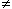

Solution to puzzle 107: A mysterious sequence
 A sequence of positive real numbers is defined by
A sequence of positive real numbers is defined by
- a0 = 1,
- an+2 = 2an - an+1, for all n
 0.
0.
Find a2005.
It may at first seem that the sequence is not uniquely defined! However, the constraint that the sequence consists of positive numbers allows us to deduce the value of a1. We will show that, if a1  1, the sequence will eventually contain a negative number.
Letting a1 = x, we find
| a0 = 1 + 0x, | a1 = 0 + x x > 0, |
| a2 = 2 - x x < 2, | a3 = -2 + 3x x > 2/3, (1) |
| a4 = 6 - 5x x < 6/5, | a5 = -10 + 11x x > 10/11, ... |
It seems clear that, as we calculate more and more terms, x will be "squeezed" between two fractions, both of which are part of a sequence which tends to 1 as n tends to infinity. (It would follow that x = 1.) We verify this intuition below.
Setting x = 0, to isolate the constant terms in (1), we obtain the sequence {bn}: 1, 0, 2, -2, 6, -10, ...
We conjecture that, from b2 = 2, b3 = -2 onwards, the sequence alternates in sign, with |bn+2| > |bn|.
We prove this conjecture by mathematical induction.
Consider b2n = r, b2n+1 = -s, where n, r, s are positive integers.
If n = 1, r = s = 2, which alternates in sign, as per the inductive hypothesis.
If n = k, b2k+2 = b2(k+1) = 2r + s > r > 0, and b2k+3 = b2(k+1)+1 = -(2r + 3s) < 0, so that |-(2r + 3s)| > s.
That is, b2k+2 > b2k > 0, and b2k+3 < b2k+1 < 0.
The result follows by induction; sequence {bn} alternates in sign, with |bn+2| > |bn|.
Setting x = 1, we know from the recurrence relation that an = 1, for all n  0.
0.
Therefore, the absolute value of the coefficient of x in sequence (1) must always differ by 1 from the absolute value of the constant term.
More specifically, we have
a2n = b2n - (b2n - 1)x x < b2n/(b2n - 1), and
a2n+1 = b2n+1 - (b2n+1 - 1)x x > b2n+1/(b2n+1 - 1). (Note: b2n+1 < 0.)
Since |b2n| and |b2n+1| are strictly increasing with n, the limit as n tends to infinity of both {b2n/(b2n - 1)} and {b2n+1/(b2n+1 - 1)} is 1.
Hence x = 1.
(For any x 1, there exists n such that x > b2n/(b2n - 1) or x < b2n+1/(b2n+1 - 1), and hence a2n < 0 or a2n+1 < 0.)
Therefore an = 1, for all n  0. Specifically, a2005 = 1.
0. Specifically, a2005 = 1.
Remarks
The above proof is from first principles. We can also use the theory of recurrence relations.
This recurrence relation may be written as an+2 + an+1 - 2an = 0. It is linear and homogenous, and has characteristic equation
m2 + m - 2 = (m - 1)(m + 2) = 0, with roots m = 1, m = -2.
Hence the general solution is an = A·1n + B·(-2)n, where A, B are constants, to be determined.
Then an > 0, for all n  0 B = 0.
0 B = 0.
And a0 = 1 A = 1.
Therefore the solution to the recurrence relation is an = 1, for all n  0.
0.
Source: Traditional